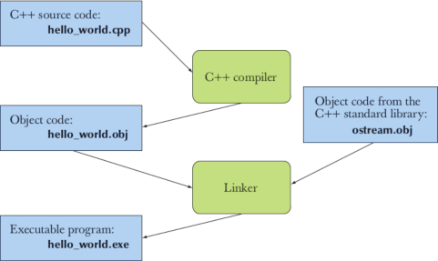

gcc compiler
The code can’t actually do anything until it’s compiled into an executable binary file. The binary a.out ’s instructions are written in machine language, an elementary language the CPU can understand called assambler code. Compilers are designed to translate the language of C code into machine language for a variety of processor architectures. In this case, the processor is in a family that uses the x86 architecture. There are also Sparc processor architectures (used in Sun Workstations) and the PowerPC processor architecture (used in pre-Intel Macs). Each architecture has a different machine language, so the compiler acts as a middle ground—translating C code into
machine language for the target architecture.
A program usually consists of several separate parts, often developed by different people. For example, the “Hello, World!” program consists of the part we wrote plus parts of the C++ standard library. These separate parts (sometimes called translation units) must be compiled and the resulting object code files must be linked together to form an executable program. The program that links such parts together is (unsurprisingly) called a linker:
The gcc command can range from simple to convoluted depending upon the operations that the user wishes to perform. At its simplest, you specify
gcc [compilation-option] filename
The compilation option will be one of -c, -S or -E where,
-c performs compilation or assembly but no linking;
-S performs compilation but not assembly
-E stops after the preprocessing stage.
-o: specifies the output executable filename.
-Wall: prints "all" Warning messages.
-g: generates additional symbolic debuggging information for use with
gdbdebugger.
If no compilation option is given, then compilation performs preprocessing, compilation, linking, and assembly combined.
By using -c, the output produced by the compiler is an object file (with a .o extension). You would use -c to create a library file that other programs might link to. By itself, the .o file is not executable but can only be used by the compiler to produce other compiled programs.
More GCC Compiler Options
A few commonly-used GCC compiler options are:
$ g++ -Wall -g -o Hello.exe Hello.cpp
Compile and Link Separately
The above command compile the source file into object file and link with other object files and system libraries into executable in one step. You may separate compile and link in two steps as follows:
// Compile-only with -c option
> g++ -c -Wall -g Hello.cpp
// Link object file(s) into an executable
> g++ -g -o Hello.exe Hello.o
The options are:
-c: Compile into object file "
Hello.o". By default, the object file has the same name as the source file with extension of ".o" (there is no need to specify-ooption). No linking with other object files or libraries.- Linking is performed when the input file are object files "
.o" (instead of source file ".cpp" or ".c"). GCC uses a separate linker program (calledld.exe) to perform the linking.
Compile and Link Multiple Source Files
Suppose that your program has two source files: file1.cpp, file2.cpp. You could compile all of them in a single command:
> g++ -o myprog.exe file1.cpp file2.cpp
However, we usually compile each of the source files separately into object file, and link them together in the later stage. In this case, changes in one file does not require re-compilation of the other files.
> g++ -c file1.cpp > g++ -c file2.cpp > g++ -o myprog.exe file1.o file2.o
pkg-config
The pkg-config gives you command line switches, usually used for compilation and linking. For example if we want the name for the library GtkSourceView, having installed libgtksourceview-3.0-dev, we use
dpkg -L libgtksourceview-3.0-dev | grep pkg
The output is
/usr/lib/x86_64-linux-gnu/pkgconfig /usr/lib/x86_64-linux-gnu/pkgconfig/gtksourceview-3.0.pc
remove the .pc extension and that is probably the name to be used with pkgconfig --libs inside the Makefile.
These are exactly the flags I need to compile using GSL and LibXML2. The -l flags reveal that GNU Scientific Library depends on a Basic Linear Algebra Subprograms (BLAS) library, and the GSL’s BLAS library depends on the standard math library. It seems that all the libraries are in the usual places, because there are no -L flags, but the -I flag indicates the location for LibXML2’s header files.
Back on the command line, when you surround a command by backticks, the shell replaces the command with its output. That is, when I type:
gcc `pkg-config --cflags --libs gsl libxml-2.0` -o specific specific.c
the compiler sees:
gcc -I/usr/include/libxml2 -lgsl -lgslcblas -lm -lxml2 -o specific specific.c
So pkg-config does a lot of the work for us, but it is not sufficiently standard that we can expect that everybody has it or that every library is registered with it. If you don’t have pkg-config, then you’ll have to do this sort of research yourself, by reading the manual for your library or searching your disk as we saw previously.